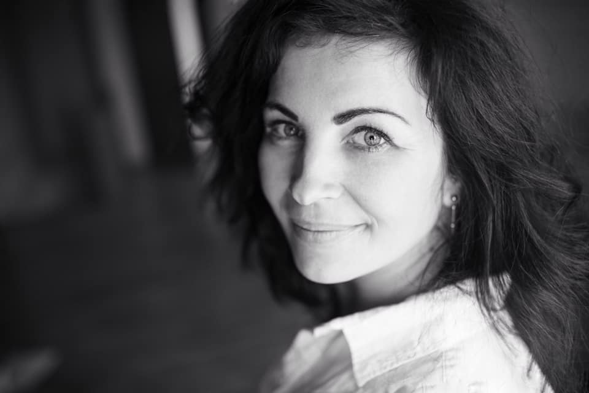
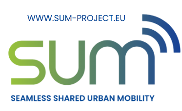
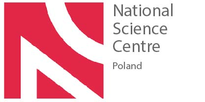

Transport publiczny
Jeden autobus zastępuje 33 samochody. Dlaczego tego nie widać?
Przestrzeń drogowa to zasób ograniczony. Pokazuję, jak matematyka ruchu zmienia sposób myślenia o mieście.
Warsztaty, które uczą dzieci myśleć o przestrzeni, transporcie i środowisku — przez zabawę, ruch i tworzenie.



Jestem doktorem nauk o transporcie i adiunktem na Uniwersytecie Jagiellońskim. Od ponad 10 lat badam, jak miasta mogą być lepiej zaprojektowane dla ludzi — nie tylko dla samochodów.
Na co dzień łączę pracę naukową z doświadczeniem życia w mieście jako mama dwójki dzieci (nastolatka i przedszkolaczki). To właśnie z tej perspektywy widzę, jak bardzo sposób organizacji transportu wpływa na codzienne decyzje rodzin — bezpieczeństwo, samodzielność dzieci i jakość czasu.
W ramach europejskiego projektu SUM współpracuję z partnerami z 15 krajów UE, szukając praktycznych rozwiązań dla mobilności miejskiej. Jednym z efektów tej pracy było współtworzenie koncepcji usługi LajkBus na Skotnikach — rozwiązania, które realnie zmienia sposób poruszania się mieszkańców.
Warsztaty „Miasto w ruchu” to mój sposób na to, żeby ta wiedza dotarła tam, gdzie ma największy sens — do dzieci. Bo to one za kilkanaście lat będą podejmować decyzje o tym, jak będą wyglądały nasze miasta.
7 programów edukacyjnych dla różnych grup wiekowych. Każdy oparty na prawdziwych danych naukowych — podany w języku dzieci.
Piszę o transporcie miejskim językiem zrozumiałym dla każdego — bo każdy z nas jest uczestnikiem ruchu.
Warsztaty to punkt startowy. Testuję rynek, zbieram referencje i buduję markę — po czym skaluję do przestrzeni, która zmieni sposób, w jaki dzieci spędzają czas po szkole.
Szkoła, biblioteka, dom kultury? Chętnie omówię program i dostosuję go do Twoich potrzeb.
Jestem do dyspozycji od poniedziałku do piątku. Odpowiadam zazwyczaj w ciągu 24 godzin.
Wiadomość trafi na urbanek.krk@gmail.com